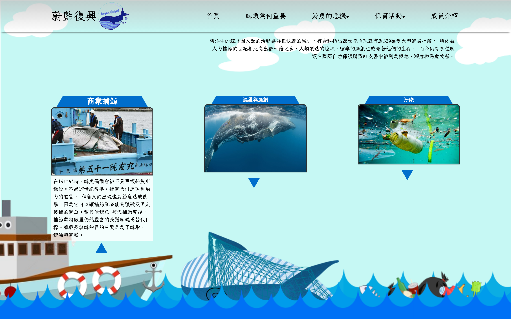
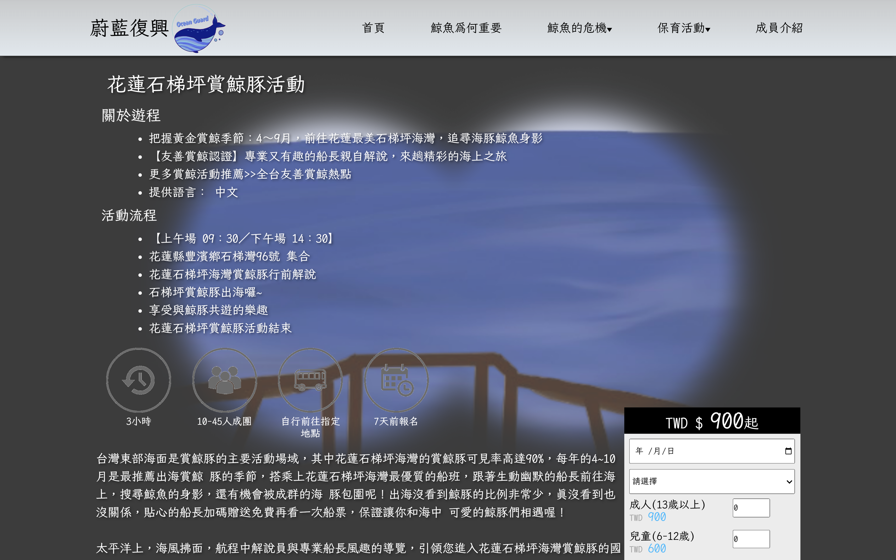
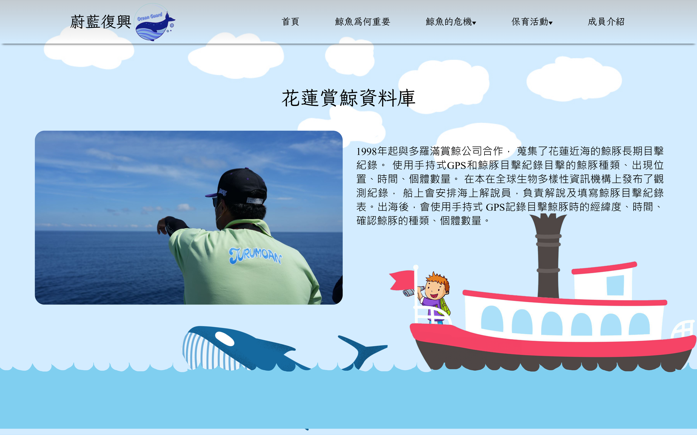
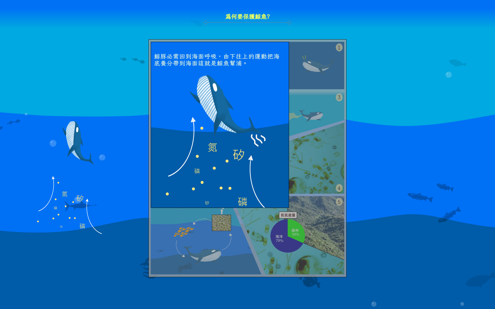
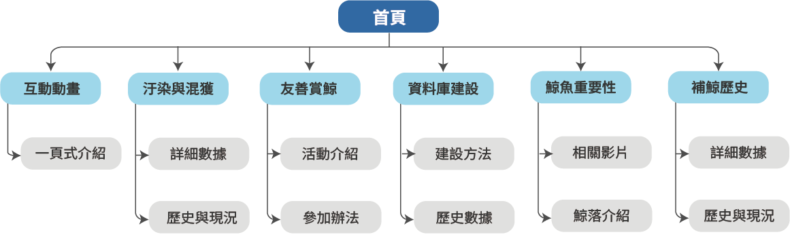

以海洋視覺與鯨魚動畫建立第一印象，帶出保育議題。
Web Design / Conservation
海蔚護鯨
以 SDGs 14 海洋保育為主題的鯨豚保育網站。作品透過開場動畫、首頁互動、鯨魚危機介紹、資料庫與友善賞鯨活動頁面，讓使用者理解鯨魚對海洋的重要性，也能找到保育活動與賞鯨資訊。






用動畫與視覺敘事連接首頁、鯨魚危機與後續分頁。
Overview
網站介紹
海蔚護鯨以「台灣是海島國家」作為出發點，聚焦海洋污染、混獲、商業捕鯨與鯨豚保育議題。網站採藍色調與鯨魚 Logo，搭配大量互動與動畫，希望讓 14 到 18 歲青少年、學校團體與想參與保育活動的人，更容易理解鯨魚的處境與重要性。
- 首頁以鯨魚被漁網纏繞的動畫帶入危機情境，接續呈現鯨魚面臨的真實問題。
- 以漫畫格、氣泡與 hover 放大互動介紹鯨魚幫浦，讓知識內容更有記憶點。
- 活動區加入搜尋欄與橫向滾動卡片，讓使用者快速找到保育與賞鯨活動。
- 資料庫與賞鯨頁整合表格、表單、圖片放大與滾輪動畫，讓內容不只停留在靜態閱讀。
Information Architecture
資訊架構圖
